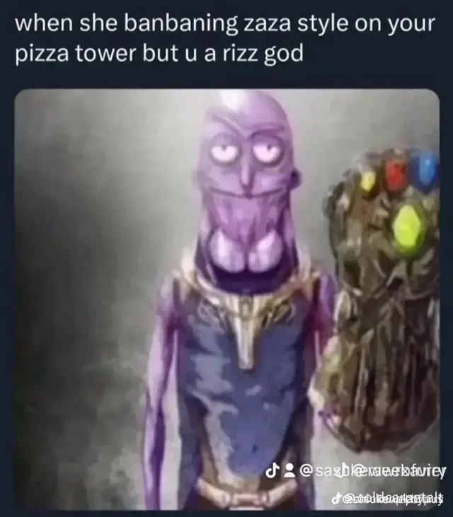

Attention, chaps and chapettes! It seems our dear old company is in a spot of bother
- our coffers are looking rather barren, much like a tea kettle without a drop to boil!
If you've got a spare bit of change jingling in your pockets, do consider tossing it our way.
We're in dire need of funds to keep this ship afloat, lest we find ourselves drinking from the
office fountain! Don't let us become a cautionary tale at the local pub - every little helps, as
they say!
Become a SIGMA today
Ever wanted to transform from a mere mortal into the legendary alpha or enigmatic sigma male?
Fear not, for your journey begins here! From mastering the art of confident swagger to decoding
the secrets of silent strength, this is your guide to ascending the hierarchy of manliness.
Embrace your inner alpha, or dance to the beat of your own drum as a sigma –
the choice is yours, and the adventure awaits!

HOW TO BECOME THE RICK OF THE FRIEND GROUP
Are you tired of being just another face in the crowd? Ready to break the mold and become the
Rick of your friend group? Strap in for a wild ride through the cosmos of coolness, where
intellect reigns supreme and the absurdity knows no bounds. With a dash of sarcasm, a sprinkle
of science, and a lot of swagger, you'll be turning heads and bending reality in no time.
So grab your portal gun, because adventure – and a healthy dose of nihilistic humor – is coming to
skibidi rizz ohio baby gronk towm.
About Us
Welcome to our corner of the internet, where gaming meets lawnmowing, hot dogs meet Wednesdays, socks are
non-negotiable, and showers are as rare as a blue moon. We're not your average crew; we're a bunch of gamers
with a penchant for the peculiar, the offbeat, and the downright bizarre.
First things first, let's talk gaming. From pixelated adventures to high-stakes showdowns, we live for the
thrill of the game. Whether it's conquering galaxies, slaying dragons, or outsmarting opponents in strategic
battles, we're always up for a challenge. Gaming isn't just a hobby for us; it's a way of life, a portal to
infinite worlds and endless possibilities.
But gaming isn't the only thing that gets our adrenaline pumping. We're also passionate about lawn care.
There's something oddly satisfying about the hum of a lawnmower, the smell of freshly cut grass, and the
satisfaction of a job well done. Wednesdays are our sacred days – the days we put down our controllers,
roll up our sleeves, and get to work on those lawns. And let's not forget the hot dogs. Wednesdays wouldn't
be complete without a juicy hot dog in hand, topped with all the fixings, of course.
Now, about those socks. We have a strict policy when it comes to footwear – socks are a must, no exceptions.
Call it superstition or just good old-fashioned comfort, but we firmly believe that socks are the key to a
successful gaming session, a pristine lawn, and a satisfying hot dog experience.
As for showers, well, let's just say they're not our top priority. We prefer to save water for more
important things, like watering our lawns or powering our gaming rigs. Besides, who has time for showers
when there are virtual worlds to explore and lawns to mow?
Now, here's where things get fascinating. You see, we have a little side hustle that sets us apart
from the rest – we collect our gamer gunk. That's right, those crumbs, sweat stains, and fingerprints that
accumulate on our controllers and keyboards? We gather them up, package them with care, and sell them for
profit on the Latvian black market. And what do we accept as payment? Nuka Cola bottle caps, of course.
It's a win-win situation – we get to clean up our gaming gear, and our customers get a piece of gaming
history.
So, whether you're a fellow gamer, a lawn care enthusiast, or just someone who appreciates a good hot dog,
you've come to the right place. Welcome to our world, where socks are sacred, showers are optional, and
gamer gunk is the currency of choice. Sit back, relax, and prepare to embark on a journey unlike any other.